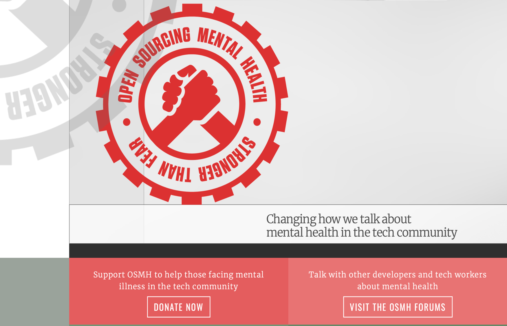

Exploring Mental Health In The Workplace Through Visualizations

MISSION STATEMENT
To provide a source of visualized mental health data that users will leverage for developing effective mental health management solutions, discovering new mental health insights that otherwise would not have been possible through examination of survey question answers, and for personal informative research.
What tasks can be accomplished with the visualizations?
- Identify areas to allocate resources and improve mental health in the Tech industry.
- Develop an understanding of how support, resources, and awareness to mental health issues changed over time.
- Present insights for educational and training purposes to corporate leaders and managers so they can better manage mental health in their organizations.
- Develop strategic partnerships with mental health organization and solution providers.
- Satisfy the general knowledge and informational requirements of individual users seeking mental health related data for their personal circumstances.
DATA OVERVIEW
The Open Source Mental Health group aims to provide support for the tech community. They provide awareness, education, and resources related to mental health in the tech workspace. They host an annual survey specifically targeting technology workers as a demographic. The visualizations displayed are an examination of survey data from the years 2014 through 2019.
The Mental Health in Tech 2022 survey is now open, click here to submit your response!
For a more in-depth look into who participated in each survey, check out our Demographics Page.
Check out the Open Source Mental Health organization:
